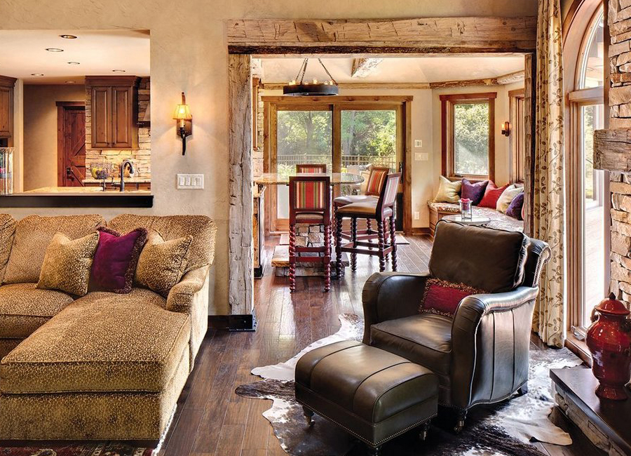
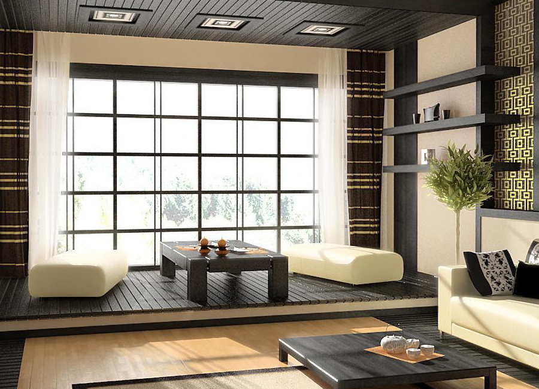
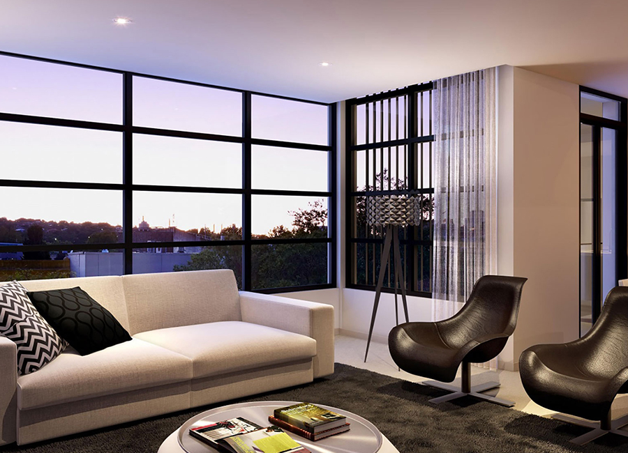
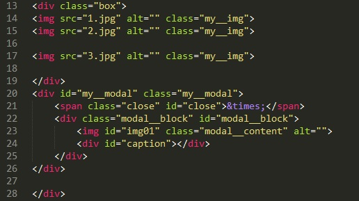
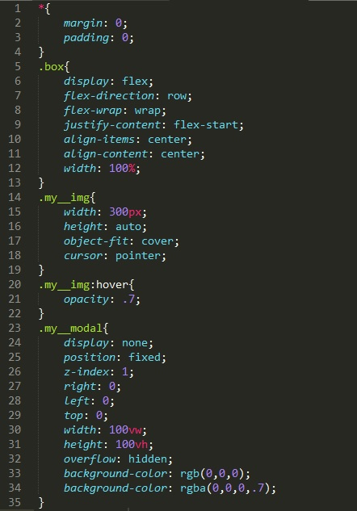
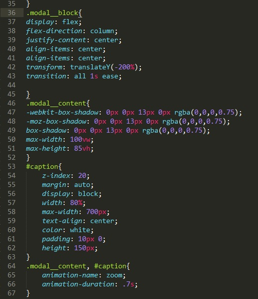
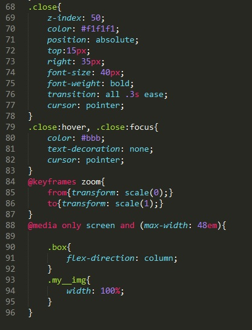

Результат



×

Начнем с разбота кода HTML
Здесь у нас есть два блок. В первом блоке (class="box") мы поместили три тега img с классом my__img.
Второй блок собственно и будет нашим можальным окном. Этому блоку мы дали id=my__modal и class=my__modal. В этом блоке у нас содержатся кнопка закрытия (span class="close" id="close) и блок в который будет помещаться сама фотография (class="modal__block" id="modal__block") и блок с надписью (id=caption)
Для чего сделали блок modal__block в блоке my__modal? для того что бы кнопка закрытия не залезала на фотографию
Теперь рассмотрим CSS файл. Файл большой, поэтому разделим его на три части.
Рассмотрим первую чать. В первом блоке мы указываем нулевый внешние и внутренние отступы у всех элементов страницы
.box - стилизуем блок в котором хранятся наши фотографии
.my__img - сами картинки
.my__img:hover - при наведении на картинку она примет значение прозрачности 0.7.
.my__modal - стилизуем модальное окно
Вторая часть
.modal__block - стилизуем блок который непосредственно будет содержать раскрытую картинку
.modal__content - стилизуем тег img в модальном окне
#caption - блок caption который будет отвечать за подпись под фотографией
.modal__content, #caption - устанавливаем анимацию картинке и тексту с описанием картинки
Третья часть
.close - стилизуем кнопку закрытия картинки
.close:hover, .close:focus - устанавливаем эффекты при наведении и при фокусе на кнопку закрытия
@keyframes zoom - здесь расписана наша анимация. свойство transform - трансформирует наш элемент, делает он это с помощью функции scale. эта функция масштабирует элемент по горизонтали и вертикали. тоесть нашу анимацию можно прочитать так: от трансформации по масштабу равному 0 (картинка имеет масштам 0 от фактического размера) до трансформации по масштабу равному 1 (картинка имеет масштаб 1 к 1)
Далее идет медиазапрос для адаптации сайта под телефон. Медиазапрос читается так пока максимальный размер ширины экрана не превышает 48em флексы в главном боксе выстраиваются не в строку а в столбец и ширина картинки будет занимать 100% ширины экрана
Здесь весь код помещается в одну функцию которая присваивается событию загрузки окна
В самом начале мы объявляем переменные всех наших элементом. Затем запускаем цикл от i равной 0 до i меньше длине массива imgArr. у нас с классом my__img три элемента. тоесть цикл будет выполнен со значениями i = 0, 1 и 2. Далее каждый тик цикла, переменной picture будет присваиваться значение элемента массива с индексом 0, 1 и 2. тоесть каждыйтик цикла переменная picture станет объектом тега img с каждой картинкой и каждый тик эта переменная будет улетать в функцию openImg.
Что касается слова this, то в этом контексте кода то там можно было написать и так:
openImg(picture)
Теперь рассмотрим функцию openImg. Рассматривать ее лучше на конкретном примере. Допустим у нас прошел первый тик цикла и переменной picture присвоилось значение элемента с первой картинкой. а именно передались такие значения как src и alt. Первое что делает функция это делает наше модальное окно видимым (устанавливает свойство display="block"). далее блоку который непосредственно будет содержать картинку установится свойство transform с нулевым значением (т.е отменили трансформацию). далее тегу img который находится на модальном окне в свойства src и alt присвоили значения из переменной picture. и наконец в caption записали текст с описанием картинки. Интересно сделали, само описание картинки берется из атрибута alt.
Теперь рассмотрим функцию close. тут все предельно просто, элементу с id my__modal (ссылка к нему идет через переменную modalWindow) в свойство display записывается значение none и окно пропадет
в последнем блоке кода мы у переменной span вызываем событие onclick и указываем там нашу функцию close и записываем в modalBlock свойство transform со значением translateY которая даст эффект будто наша картинка при закрытии улетела наверх